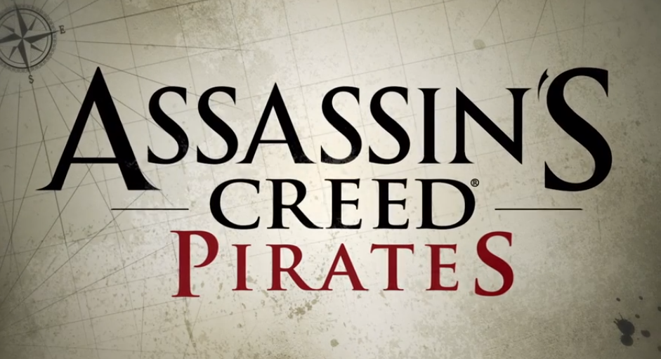

TITOLO: Assassin's Creed: Pirates
SVILUPPO: Ubisoft Paris
DATA DI USCITA: 5 dicembre 2013 (Android, iOS)
COLLOCAMENTO STORICO: Età d'oro della pirateria
MECCANICHE DI GIOCO:
Pirates riprende la struttura del corrispondente capitolo principale, imperniata sulle battaglie navali e l'elemento marino, che qui però monopolizza il gioco: l'intera azione di gioco si svolge infatti in nave, e non è mai possibile scendere da essa né manovrare direttamente il personaggio, eccetto che durante la pesca e l'arpionaggio.
La visuale di gioco cambia a seconda della situazione: è in prima persona - quindi dal punto di vista del timoniere - a bassa velocità, esterna - come in Assassin's Creed IV: Black Flag - a vele spiegate; nei combattimenti navali, la schivata è inquadrata dall'alto, la difesa e l'attacco da dietro i cannoni della propria nave.
I dialoghi, tra cui gli unici momenti terrestri della trama, sono separati dalla parte giocabile, e composti dalle sagome bidimensionali dei personaggi che scambiano parole sotto forma di didascalia - senza suoni - su uno sfondo disegnato.
L'intera azione di gioco si svolge poi nel passato e non c'è una parte nel presente.
Il gioco sfrutta una grafica 3D semplificata per i dispositivi mobili.
Navi:
Come nel capitolo principale, i velieri sono classificati secondo la classe, l'atteggiamento e la nazionalità: la classe può essere - in ordine crescente - di cannoniera, goletta, brigantino, fregata o vascello - con l'aggiunta di navi mercantili, schiaviste e superiori, incontrabili solo in particolari missioni.
L'atteggiamento può essere neutrale, per i mercanti - sono indicati dal colore giallo e non attaccano il giocatore - o aggressivo, per le navi da guerra - sono indicate dal colore rosso e attaccano il giocatore. Il comportamento dei velieri aggressivi è stato grandemente modificato rispetto a Black Flag: non danno la caccia al giocatore per tutta la mappa, bensì lo attaccano solo se questi entra nella loro visuale, in compenso sono presenti in numero di gran lunga maggiore - più del doppio dei mercanti - e compaiono sin da subito nei mari, senza essere legati ad alcun sistema di notorietà che nel gioco è assente.
La nazionalità può essere inglese o spagnola, anche se due navi superiori sono francesi e una olandese; nel capitolo 10 è possibile affrontare i "pirati avidi", bucanieri intenzionati ad arraffare il tesoro di Alonzo.
Per quanto riguarda le navi giocabili, all'inizio del gioco Alonzo capitanerà la cannoniera Serpent, per poi passare alla goletta Wanderer; spendendo real si potranno ottenere altre imbarcazioni, e tutte le navi sono potenziabili in velocità, potenza e difesa e personalizzabili colorando le vele con diverse fantasie.
Battaglie navali:
Il combattimento tra navi è fondamentale, e la sua meccanica è stata profondamente modificata e semplificata rispetto al capitolo principale: la battaglia è distinta dal resto dell'azione, a mo' di minigioco, e distingue al suo interno diverse fasi difensive e offensive alternate fra di loro; siccome poi non è possibile scendere dalla nave, è stata eliminata la fase dell'arrembaggio, e i nemici sconfitti sono sempre affondati e il loro carico recuperato in mare.